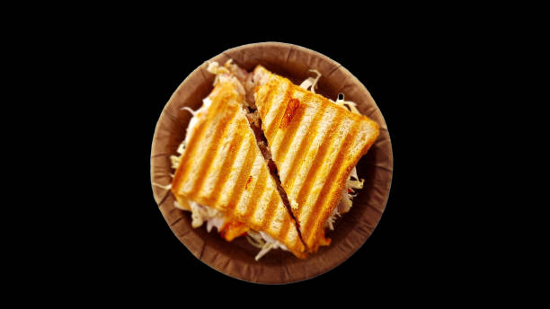
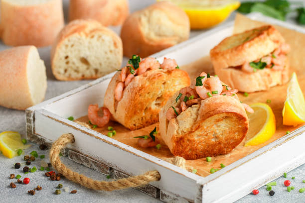
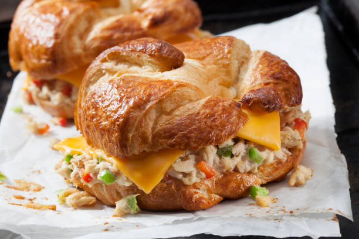
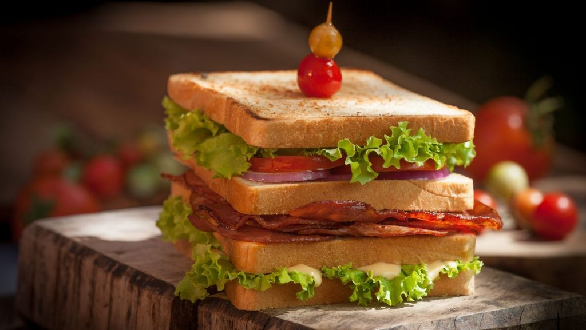
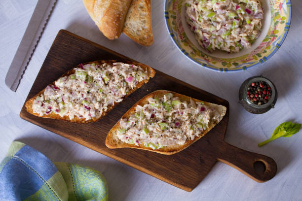
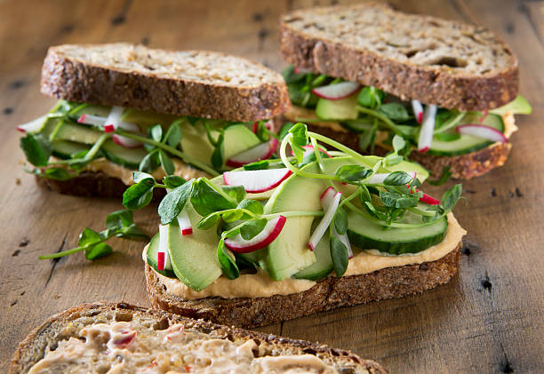

Grilled-Cheese
Grilled cheese is a classic and comforting sandwich that consists of melted cheese between two slices of
bread, grilled to perfection. It's a simple yet delicious dish that has been enjoyed by people of all
ages for many years.
To make a grilled cheese sandwich, you'll need bread, cheese, and butter or oil for grilling. The choice
of bread and cheese is flexible, allowing you to customize the sandwich to your liking.

Prawn-Sandwich
A prawn sandwich is a delightful and flavorful option that highlights the natural sweetness and
succulence of prawns. It offers a delicious combination of textures and tastes, making it a popular
choice for seafood enthusiasts.Prawn sandwiches are perfect for light lunches, picnics, or as a
refreshing option during warm weather. They pair well with a side of potato chips, coleslaw, or a fresh
garden salad.

Seafood-Sandwich
A seafood sandwich is a delicious and flavorful option that combines various types of seafood with bread
and other tasty ingredients. It offers a delightful combination of textures and flavors, making it a
popular choice for seafood lovers. There are several variations of seafood sandwiches, but let's explore
a classic recipe featuring crab meat.

Stacked-Double-Decker
A stacked double-decker sandwich is a hearty and impressive creation that consists of multiple layers of
fillings stacked between three slices of bread. This sandwich not only looks visually appealing but also
offers a satisfying and diverse combination of flavors and textures.The stacked double-decker sandwich
offers a substantial and satisfying meal that can be customized with your favorite fillings and
condiments. Feel free to experiment with different combinations of meats, cheeses, vegetables, and
spreads to create your perfect sandwich.

Tuna-Sandwiches
Tuna sandwiches are a popular and versatile option that can be enjoyed for a quick and satisfying meal.
They are easy to make and offer a delicious combination of flavors and textures.Tuna sandwiches are
great for a quick lunch, picnic, or on-the-go meal option. They pair well with a side of potato chips, a
fresh green salad, or a cup of soup.

Vegetable-Sandwich
A vegetable sandwich is a nutritious and flavorful option that celebrates the freshness and variety of
vegetables. It's a great choice for vegetarians, vegans, or anyone looking to incorporate more
plant-based options into their diet.Vegetable sandwiches are perfect for a healthy and satisfying lunch
or a quick and refreshing meal on-the-go. They pair well with a side of fresh fruit, vegetable sticks,
or a cup of soup.